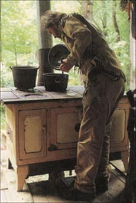
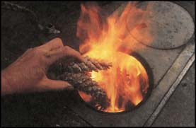

Cooking With Wood
December/January 1999
by Eustace Conway
Cooking on a wood fire can produce the finest quality food in the world. I have enjoyed cooking exclusively on wood for over 20 years. Nothing surpasses the excellence of smoke-flavor - enhanced and gently cooked fare from a traditional cookstove.
There's a feeling of independence and empowerment that comes from relying on a local renewable fuel, particularly one that you can harvest yourself. My ax rings upon the block like a freedom bell, announcing my ability to work with the resources of the nearby forest to sustain my cooking needs. I can split up some kindling, light a handful of dry pine cones and have a fire raging and food frying for a quick supper or snack in just minutes. And so can you with the right know how and some careful preparation.
First thing you'll need (if you don't already have one) is a cookstove, and thanks largely to last year's unprecedented, Y2K-driven demand, there's more makes and models on the market than ever before (see "Cookstove Comeback," opposite page). If, however, you decide to hunt for a bargain among used cookstove's, make sure the one you choose is not worn out. The firebox is usually the first to go: it breaks down and burns up with use. Good grates and a tight fit are important to managing a fire and keeping it from smoking up your house. You'll also want to carefully examine the operational vents, dampers and ash box and check the oven and water tank for leaks. A big firebox is nice because it holds a fire longer, can handle bigger pieces of fuel wood and requires less tending. Large stoves also make it easy to cook for large groups or big eaters. Remember, you can always cook small meals on a big stove. Beginners, beware of unwittingly settling for far less than the best possible performance from your cookstove and fire. Ideally, your wood should be thoroughly seasoned, meaning well -dried One of the biggest mistakes beginning wood cooks make is choosing the wrong fuel. Hardwoods burn slowly and give a long lasting heat-perfect for "keeping" the fire after you get it going with a lighter-weight, lower-kindling-temperature species like pine. Lightweight wood such as pine or tulip poplar curates an enthusiastic, bright, hot and fast flame, excellent for getting your fire started and for quick jobs like boiling a cup of tea or frying an egg.
A good selection of wood-stacked according to size and type in easily accessible piles close to the stove - will give you the greatest range of ability to control and create exactly the fire you need for a variety of cooking situations. I recommend stockpiling a roughly 50/50 mix of hard- and softwoods.
If at all possible, select and harvest the wood yourself. While this may seem an unnecessary chore, take my word for it: starting off with the right wood will make fast and easy work of the entire rest of the process.
When venturing out to the harvest site, keep in mind that smaller trees are easier to fell and to handle ...from carrying the pieces to splitting the blocks. Also, cutting your wood to stove length now will mean a lot less effort when it comes to cooking later on. Make your fuel 2 inches to 2 3/4 inches shorter than the distance from the front to the back of your stovebox. You can always feed in shorter pieces, but anything much longer isn't going in. Knots, bends or whorls in the wood will also affect the fit; work with nature to your best advantage. If a piece of wood is too) knotty. use it for the fireplace instead of the stove
Often, even when dealing with the high-quality lengths of wood. you'll need to cut out bad patches. Be sure to make square cut so that when you set the block up to split, it will stand up plumb and present you with a perfect target.
Ah, to split wood ...just the feel of it I prefer a woodyard with a low and high chopping block (the high block is often easier on the back. especially when the work calls for repeated swings of the ax).
A friend, Peter Gott, showed me his trick of the "two wheelbarrow" method. He puts one wheelbarrow to the right and another to the left of his high block, so that he doesn't have to reach to and from the ground to gather and place his wood. As he cleaves the pieces, they fall naturally into one wheelbarrow or the other and are ready for rolling to his cookstove stacks.
Another key consideration is the thickness of your stove wood. You'll want most of it to be about 1 3/4" x 1 3/4" although some larger pieces for slowing the burn and some smaller pieces, for picking up the fire are also important.
Cookstove Comeback
Anyone who has ever tasted bread fresh from inside or a stew straight off the top of a wood cookstove will tell you eating just doesn't get any better. But when, early this century, electric (and later, gas) ranges brought speed and convenience to the kitchen, most folks were more than happy to sacrifice a bit of flavor for the knob-turning ease of these modern appliances. Aside from a brief surge in sales spurred by the 1970s' oil crisis, the market for wood cookstoves dwindled steadily. By the late 1970s and early 1980s, most retailers had stopped selling cookstoves, and many manufacturers had eliminated them from their product lines.
But then came the threat (real or hyped) of Y2K, and suddenly consumers far and wide were seeking alternative means to assure their families hot meals should the lights go out.
The industry reported a 25% jump in cookstove sales nationwide for 1998, with the biggest gains occurring in the Pacific states, where sales shot up by a whopping 103%.
"Our orders have increased ten-fold," says David Arkell, vice president and general manager of Enterprise-Fawcett, a New Brunswick-based stove manufacturer that produces five cookstove models, ranging from its top-of-the-line Monarch to its rugged if not quite-stylish Woodsman camp range. So brisk was business at the start of 1999, says Arkell, that by April Enterprise had taken all of the orders it could handle through the New Year.
Norwegian stove manufacturer Jøtul recently began importing to the U.S. a mini-cookstove for the first time in 20 years. "The Jøtul 404 had been in constant production in Norway since 1953," says company marketing coordinator Bethany Webber. "But we'd stopped selling it here due to a lack of interest"
Last year, prompted by growing customer demand, Jøtul decided to bring the cookstove back to America, and the response, says Webber, was "overwhelming."
While both Arkell and Webber admit their companies witnessed a slow-down over the summer months, both are convinced that wood cookstoves are here to stay.
"Some people simply love the look of a cookstove," says Arkell. "Others just love to cook with wood. It's a narrow market, but it's there."
Eager for your own taste of yesteryear? Check out Lehman's Non-Electric Catalog (revised 1999 edition), which features an impressive selection of wood cookstoves from some half-dozen manufacturers, with prices ranging from about $850 (for an Amish-made Baker's Choice stove. ..think function over form) to well over $3,000. The catalog is available for $3 by calling (330) 857-5757, or you can access it on the Web at www.motherearthnews.com/products.html.
-Marguerite Lamb
Stack the wood in categories of different sizes, species and moisture contents. Most important is a stable stack that keeps the rain and snow off, but allows for drying. Give wood time to dry. Plan wisely. Have wood ready before you need it. Stay one year ahead with your seasoning if you can.
Getting Started
Dry pine comes, picked up after they are freshly dropped and covered with sap, are the lest thing I know of to start a fire. Dry wood shavings, huffy and long, are second best. Paper is a poor and often toxic substitute, but works. Start a big hill of tinder in your firebox. Open vents and dampers to ensure maximum air flow through the stove. Shake the grates if they become clogged to drop out extra ashes.
Crisscross splinters on top of your tinder. Next, crisscross some thicker pieces, followed by pieces about the width of an ax handle. The crisscrossing gives heat and oxygen a path to flow between the fuel, allowing fire to rise up through tile layers. A 1/2-inch to 3/4-inch space between all fuel elements is ideal. With high-quality fuel, you can start a fire in a cold box in just seconds. (Use soft, dry wood for this beginning fire.)
When feeding your stove fire, add from one to three pieces of wood at a time. Wood pieces placed close together (about 1/4 inch apart) will burn slowly, as will moist, big or cold wood, and any of these can be used as needed to slow down a fire. Clean out and dump the ashes regularly. Ashes on top of the oven box will insulate the heat from your oven. Not good! Once the fire is hot, you can shut down control dampers to regulate the heat and control wood consumption.
Keeping a fire going and at the right intensity requires an intimate understanding of the heat of the box, the size of the fuel, tile moisture content of the wood, the density of the stacking and the amount of air flow as controlled by the vents. A good "tender" has a sixth sense about what a fire needs and when, and provides it before the file either dies down too low t0 be revived or grows so hot it burns the fo od It's a knack that comes only with experience. Have faith in yourself and listen to the fire.
Cooking Tips
Mom's homemade apple pie is mom's homemade apple pie, whether cooked in a gas or electric oven or in a cookstove (through wood cooking arguably raises the taste of even mom's pies a notch or two). The point is the recipes remain the same; it's the cooking times and techniques that may differ.
Awareness and sensitivity are the keys to success and enjoyment when cooking on these great stoves. The entire top of the cookstove can serve as a cooking surface, but keep in mind that the hottest areas will be above the firebox and toward the back of the stove. (Don't confuse those flat round disks for burners; they're actually removable lids designed to ease the task of cleaning inside tile stove.) The surface gets increasingly cooler as you move away from the heat source, giving you a wide range (quite literally!) to work with, allowing you to keep dishes at a simmer or bring them to a rolling boil. Watch your food and fire and let each tell you what it needs. Under the direction of an intuitive cook, the top of a cookstove becomes an orchestrated whirl of pots and pans, rotating, like players in a game of musical chairs, until each finds its ideal spot.
You can use a wide variety of cookware with a cookstove, but blest is cast iron (see "Care and Feeding of Cast Iran" ). Nothing absorbs and spreads the heat as well or holds it longer... perfect for the nature of fire and cookstoves. Ironware has a forgiving nature; it widens our margin of error and gives us our best chance at success.
My friend, Hoy, told me recently how he, as a nine-year-old child cooking for 11, would fill a two-foot-long iron griddle end to end with batter, then rotate it every five minutes or so to keep the heat even and constant. This way, neither end of the griddle was ever too near car too far from the fire long enough to get too hot or too cold, allowing for maximum pancake production.
The same technique can and should be used for baking and roasting. The side of the oven closest to the firebox will be the hottest, so you'll want to turn bread and other baked dishes around at least once and sometimes more (depending on the required cooking time) to ensure even heating.
One especially nice feature of the cookstove is that you can let the fire die out and the residual heat will continue to slow-cook a dish for hours, while you're out cutting wood or taking a walk on a crisp autumn day.
Despite the common modern misconception, cookstoves do not have to be slow, inefficient or backward. Used with the proper fuel wood and methods, they can be every bit as practical as contemporary gas car electric ranges. And, as an added plus, if a natural (or unnatural) disaster knocks your power out, a cookstove will keep your kitchen warm and put hot food cm the table.
Give the wood cookstove a chance, or rather, give yourself a chance with a cookstove. It takes some time to develop the confidence and expertise necessary to raise wood cooking from kitchen chore to culinary art, but with practice, you'll get there. And with one taste, you'll be glad you did.
|
 An intuitive cook knows when to feed the fire and when to stir or move the pot. |
 Dry, sap-covered pinecones are the best thing I know of for getting a fire going. |
 Spot basks in the warmth of my Kalamazoo, an antique iron cookstove friends rescued from a city dump two years ago... in near-perfect working order. |